Equinox Provisioning Platform (p2)
- Ability to install complete Eclipse-based applications from scratch, above just augmenting and updating already installed applications.
- Ability to install and manage an application from either inside the application or from another process.
- Ability to install and manage artifacts other than plug-ins and features, such as launchers, root files such as licenses, configuration files, Java VMs, etc.
- Pooling of bundles from multiple Eclipse-based applications in one directory, saving disk space and making installing and upgrading much faster.
- Staged provisioning so that downloading of software can be separated from installation.
- Dynamic discovery and resolution of software dependencies - no more broken "Select Required".
- Dependency resolution, installation, and upgrades that span multiple update sites.
- A more robust transport layer for downloading built on the Eclipse Communication Framework (ECF).
- Dynamic mirror selection and rebalancing based on mirror performance, and multi-threaded downloads.
Individual Source Bundles in Eclipse SDK
Connecting with Java authentication
The Equinox security API offers a way to describe your login configuration, login modules, and callback handlers via extension points. The class loading magic is done behind the scenes to ensure that your classes fit properly into JAAS.
The org.eclipse.equinox.security.auth package
along with the loginConfigurationProvider extension point
are good starting points to explore this functionality.
Secure storage
The storage uses an extensible list of password providers to obtain the key ring password. In this version two password providers are supplied: the UI prompt and Windows login integration modules.
While secure storage is mostly intended to be consumed by other bundles and hidden from the end user, a view of default secure storage and a preference page are provided for convenience.
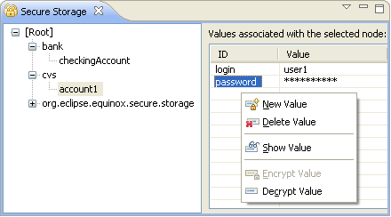
The secure preferences can be obtained using the SecurePreferencesFactory class
(org.eclipse.equinox.security.storage package).
New look for Problems, Bookmarks and Tasks views
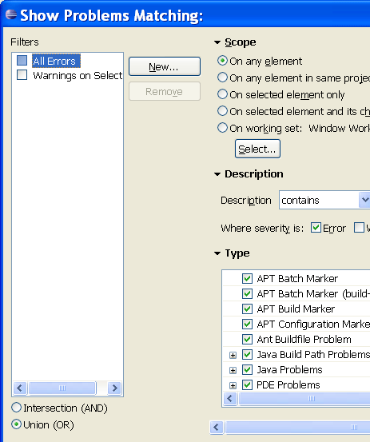
Some of the features for RCP application writers are:
- API markers view.
- Ability to set visible columns based on content.
- Menus built entirely by commands for easier extensibility.
- Reuse of system commands.
Help feature
Infocenter as web archive
Intro customizations
API for styled labels in trees and tables
- Extend
StyledCellLabelProviderand provide style ranges for your element labels inupdate - Reuse existing label providers by having them implement
IStyledLabelProviderand use them with aDelegatingStyledCellLabelProvideror aDecoratingStyledCellLabelProvider
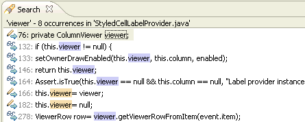
To enable or disable colored labels go to General > Appearance > Enable colored labels. The colors are defined on the colors and fonts preference page.
New extension registry listener
New annotation text styles

Enhanced launch API
Extensions have been made to the debug platform's launch shortcut API to provide clients with more control over launching the active selection (or editor). The new ILaunchShortcut2 API allows clients to dynamically specify a launchable resource or specific launch configurations associated with
the active selection (or editor).
API has been added to determine if specific attributes are present on a launch configuration and to remove them.
API has been added to determine the encoding to use when launching a configuration. A launch configuration inherits its encoding from its associated resource(s), or can specify an explicit encoding.
An optional extension interface (IDebugModelPresentationExtension) allows debug model presentations to control whether they are called in the UI thread.
A Modules View has been added to the platform, along with associated constants in IDebugUIConstants.
An optional interface (IWatchExpressionFactoryAdapter2) allows the 'Create Watch Expression' action to operate on arbitrary objects, instead of just IVariables.
SWT RTL support for Linux GTK
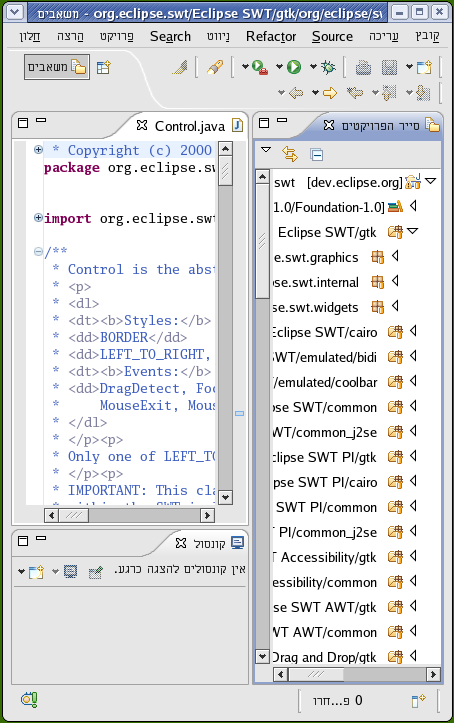
Accessibility for Mac OS X
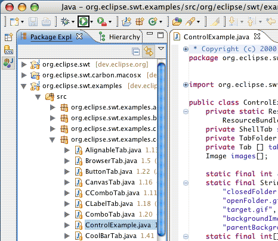
SWT inline input method
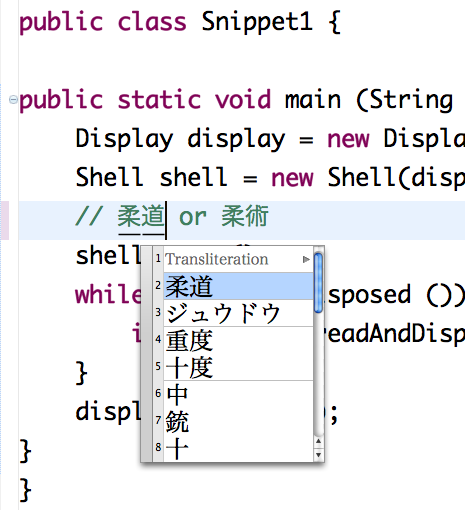
Tristate buttons
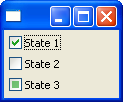
Progress bar (Vista)
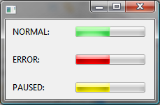
New transfer types
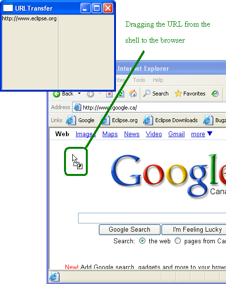
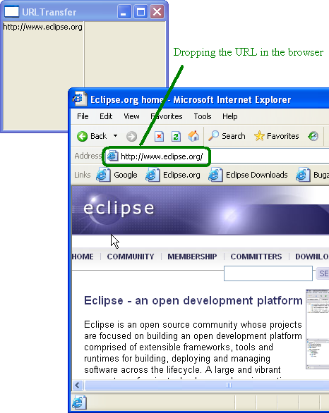
For further details, see Snippet 284.Drag and drop on Mac
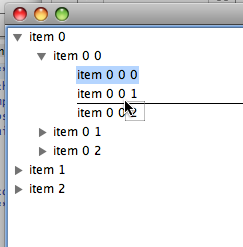
SWT full screen state
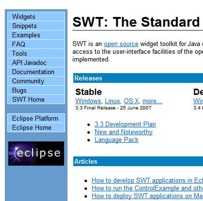
Alpha on shells
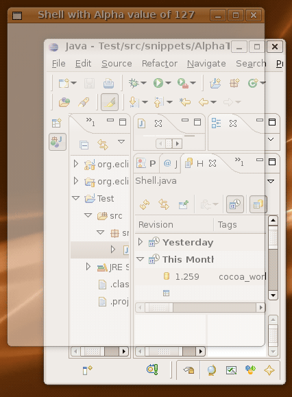
Region improvements
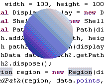
This example snippet created the snapshot shown below, a non-rectangular button.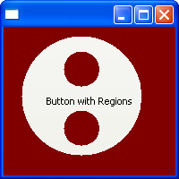
Shear transform
Print control to GC
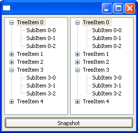
SWT features in TextLayout and StyledText
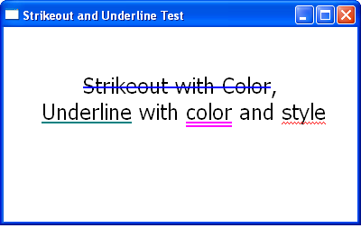